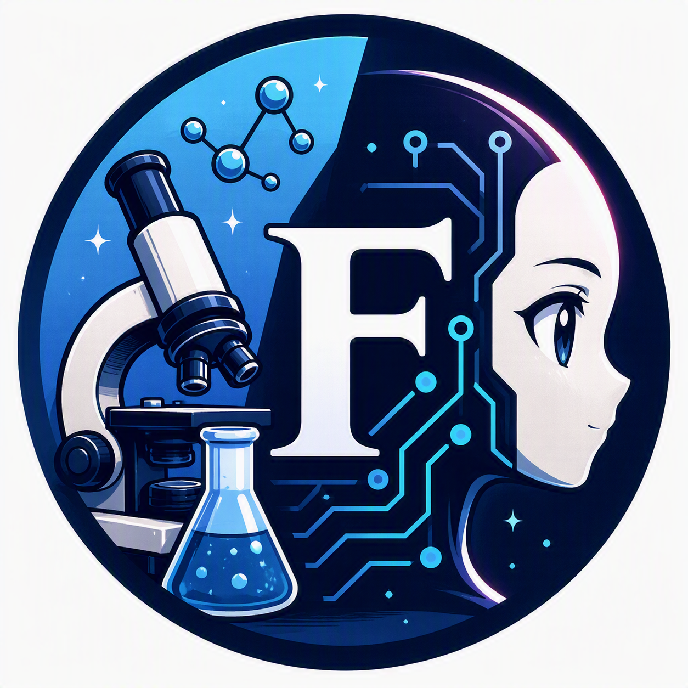

Passionate about neuroscience, technology, and process improvement
I am a technical and administrative professional working in academic research environments, supporting scientific activities through documentation management, operational processes and project coordination.
With a background in neuroscience research, I have developed a strong understanding of research workflows, scientific documentation and compliance-related procedures. Today, my work focuses on providing technical and administrative support that enables research teams to operate efficiently and achieve their objectives.
Beyond my professional responsibilities, I am passionate about technology, continuous learning and process improvement. I am currently expanding my skills in Data Analysis, Machine Learning, Web Development and AI, exploring how data-driven approaches and emerging technologies can support better decision-making, automation and operational efficiency.